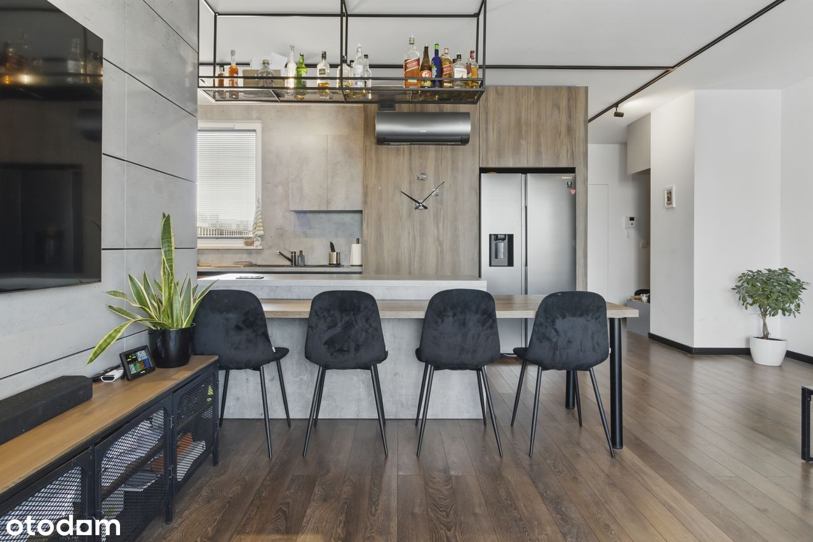
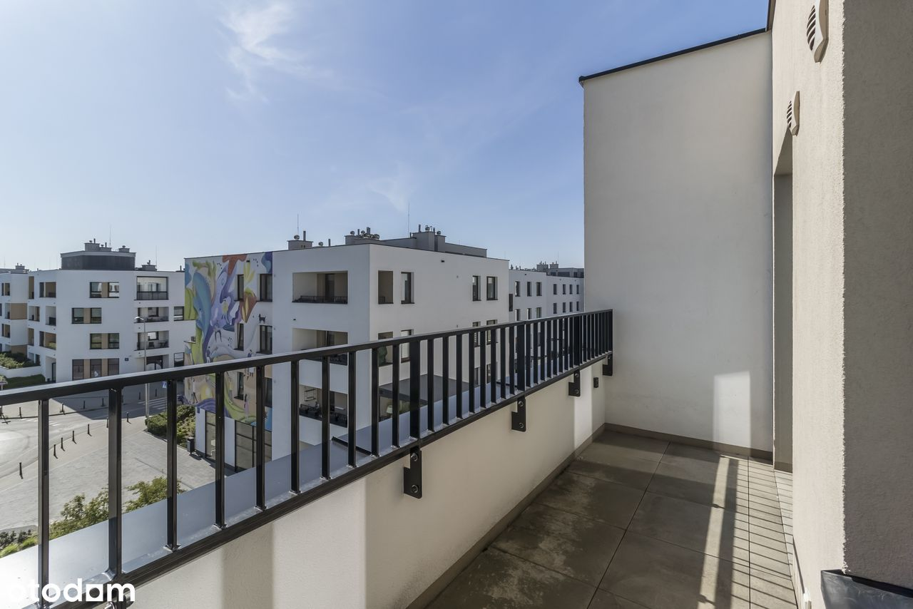
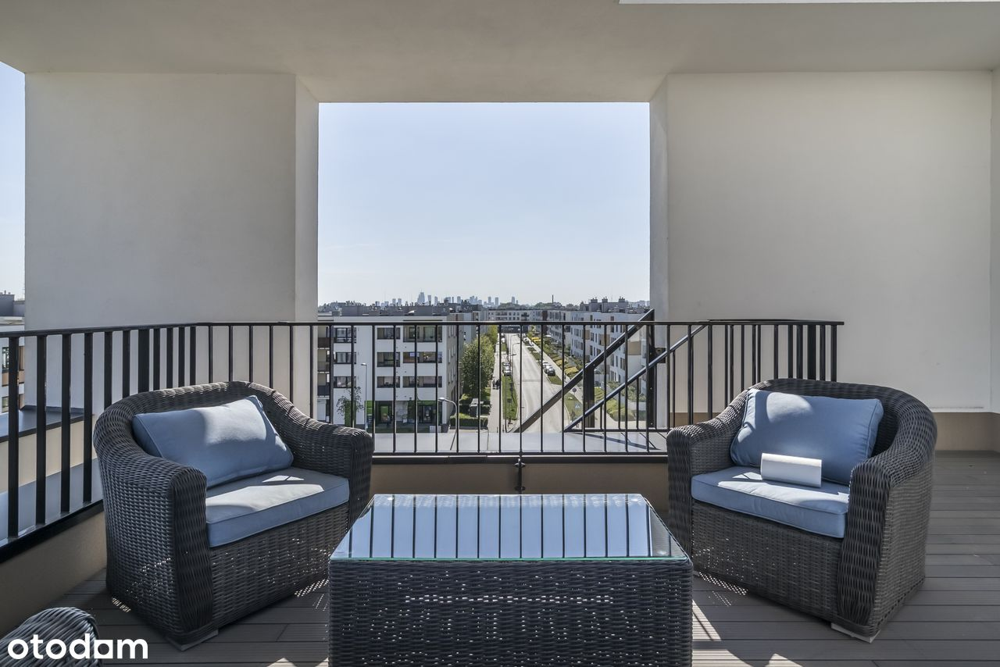
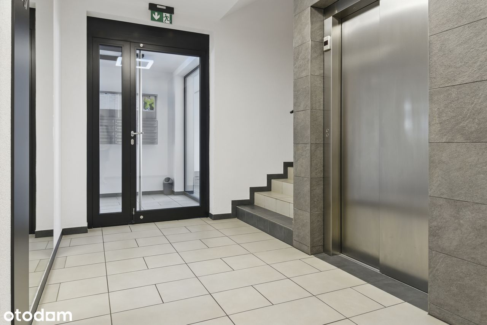
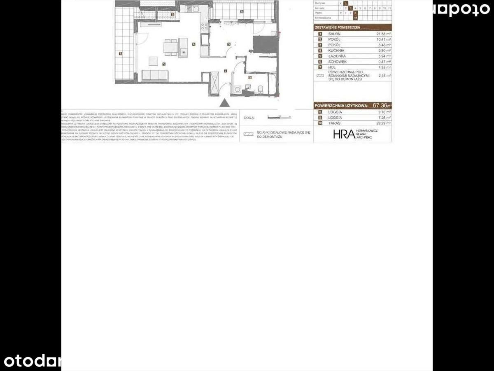

Zapraszam do zakupu rozkładowego mieszkania o powierzchni 67.45 m2, zlokalizowanego przy ul. Pohulanka na "Osiedlu Wilno"
***MIESZKANIE*** jest doskonałą propozycją dla rodziny z dziećmi lub jako inwestycja. W pokojach na podłodze położone są panele. Każde z pomieszczeń, jest umeblowane. Mieszkanie zostało urządzone w 2021 roku (nie wymaga wkładu finansowego. Do dyspozycji pozostaje pełne wyposażenie AGD. W budynku jest zamontowana winda, którą można zjechać do hali garażowej. Do mieszkania przynależy miejsce parkingowe w garażu podziemnym (płatne dodatkowo 50 000 PLN) oraz komórka lokatorska ( płatna dodatkowo 25 000 PLN )
Usytuowane jest trójstronnie wschód- południe-zachód . Pierwotnie mieszkanie było 3-pokojowe ale zostało przekształcone w 2-pokojowe i składa się z:
· przestronnego salonu z aneksem 31,68 m2,
. sypialni z garderobą 18.89 m2
. hol 7,92 m2
· schowek 0,47
· łazienki 5,94 m2
. powierzchnia pod ściankami 2,46m2
· Loggia 1 – 9,7 m2
. Loggia 2 – 7,25 m2
. Taras 29,99 m2
W galerii zdjęć załączyłem 2 plany obecny 2 pokojowy i pierwotny 3 pokojowy. Jest możliwość przekształcenia mieszkania ponownie na- 3 pokojowe.
NIERUCHOMOŚĆ: Mieszkanie znajduje się na 3 piętrze (3 piętrowy budynek z windą). Do mieszkania przynależy 30 metrowy taras na dachu budynku .Budynek został wybudowany w 2021 roku przez jednego z renomowanych deweloperów - Dom Development. Osiedle Wilno to nowoczesna inwestycja w prężnie rozwijającej się części Targówka. Osiedle cechuje się niska zabudową oraz posiada dużo pięknych i zadbanych terenów zielonych. Mieszkanie świetnie sprawdzi się zarówno dla rodziny jak i pod inwestycję. Forma własności : pełna własność z założoną księgą wieczystą jest możliwość kredytowania, grunty są uregulowane.
Wysokość czynszu : 950 PLN
Infrastruktura : Lokal znajduje jest na nowocześnie zaprojektowanym Osiedlu Wilno. Okolica jest bardzo cicha i spokojna. Na osiedlu znajduje się wiele punktów handlowo-usługowych . Blisko osiedla znajdują się również supermarkety oraz kompleksy usługowo - handlowe. W pobliży mamy duży wybór przedszkoli, szkół podstawowych i liceów, brak strefy płatnego parkowania.
Komunikacja i dojazdy: Lokalizacja jest świetna również ze względu na komunikację. 400 metrów od mieszkanie znajduje się stacja PKP Zacisze Wilno dla mieszkańców a stamtąd do Dworca Wileńskiego dojedziemy w 5 minut tam możemy przesiąść się do stacji Metra Dworzec Wileński. Na osiedlu znajduje się również pętla autobusowa linii: 156, 170 którymi możemy dojechać w 10 min do Metra Targówek Mieszkaniowy lub do Dworca Wschodniego. To idealna propozycja dla osób ceniących sobie komfort, funkcjonalność oraz szybki dostęp do miejskich atrakcji. Lokalizacja zapewnia doskonałą komunikację z resztą miasta, co jest nieocenionym atutem dla aktywnie żyjących osób.
Stacje metra: Metro Dworzec Wileński, Metro Zacisze, Metro Trocka, Metro Targówek Mieszkaniowy.
Okolica : Mieszkanie jest bardzo korzystnie usytuowane – pozwala nam czerpać z wszystkiego co najlepsze z infrastruktury miejskiej, a równocześnie daje nam możliwość cieszyć się ciszą i zielenią i bliskością terenów rekreacyjnych . Po ciężkim dniu, można się wybrać do sąsiadującego lasu lub nad Zalew Bardowskiego 1 km (gdzie możemy poczuć się jakbyśmy byli poza miastem) - świetna alternatywa dla ludzi lubiących aktywny wypoczynek.
Zapraszam na prezentację.
